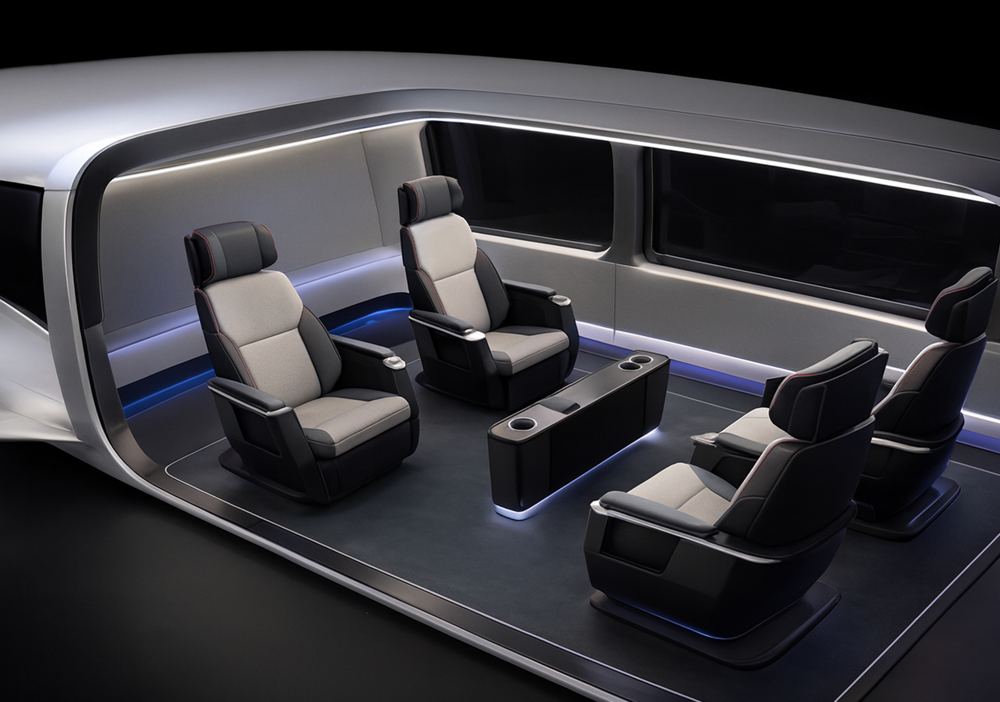
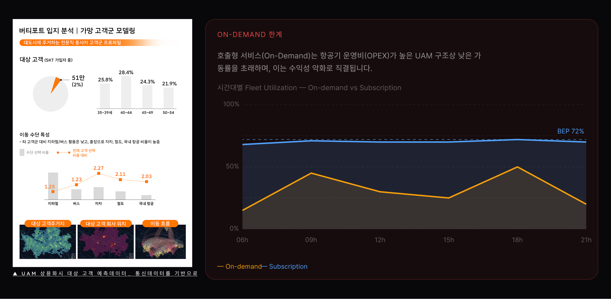
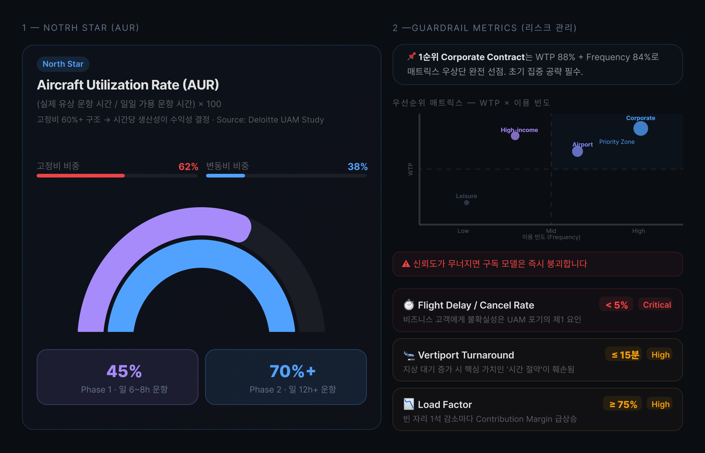
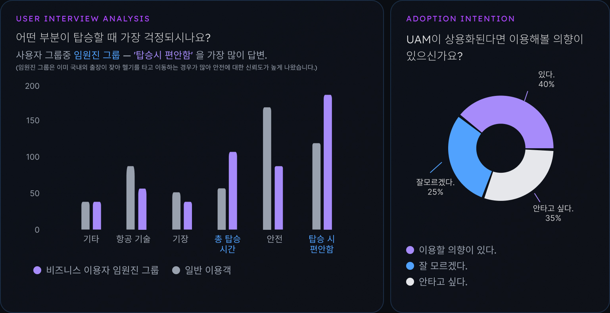
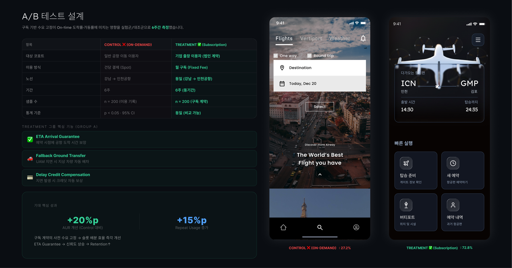
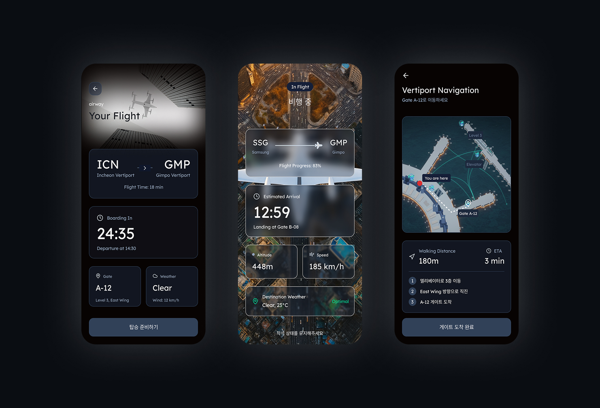
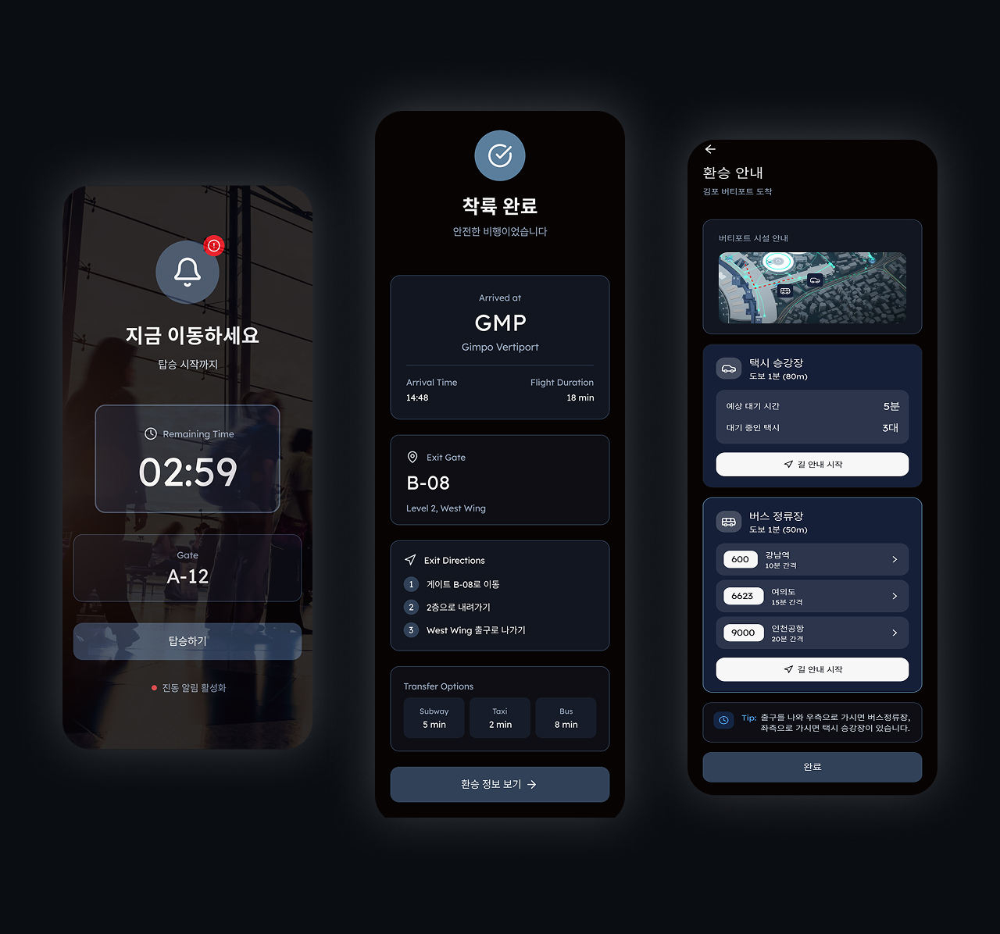
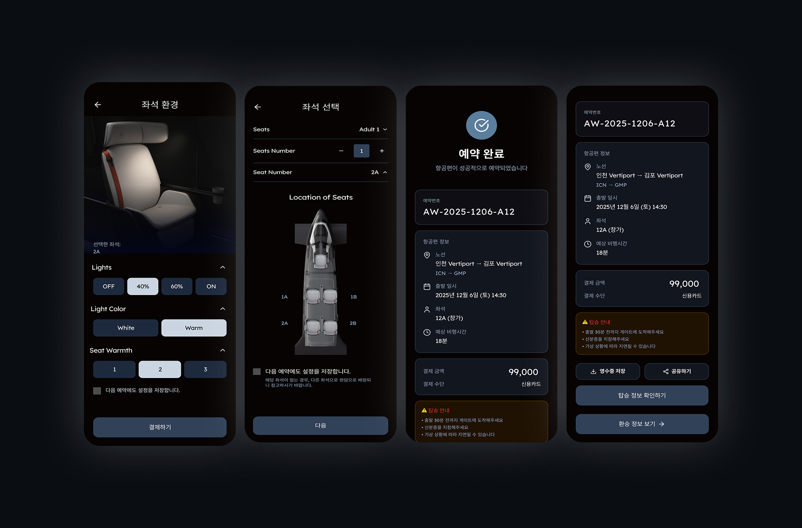
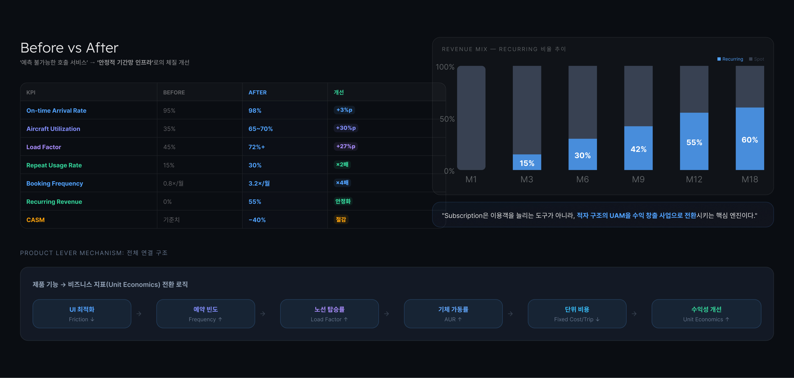

서울대학교 대학원 졸업 논문 · 2023
온디맨드 UAM의 낮은 기체 가동률(AUR 35%) 문제를 해결하기 위해, B2B 구독 모델과 실시간 ETA 보장 UX를 통해 예측 가능한 수요 구조를 설계한 졸업 논문 프로젝트.
UAM(도심항공모빌리티) 시장은 2023년을 기점으로 상용화 단계에 접어들고 있었다. 그러나 대부분의 사업자가 채택하고 있는 온디맨드(호출형) 비즈니스 모델은 구조적 수익성 문제를 안고 있었다.

온디맨드 모델의 기체 가동률(AUR)이 35%에 그쳐 손익분기점(BEP) 달성이 구조적으로 불가능한 상태. 수요 예측 불가로 인한 인프라 낭비가 핵심 원인이었다.


전체 이용객(일반 항공 이용객)과 UAM의 타겟 세그먼트를 분리하고, 핵심 문제가 어디에서 발생하는지 파악했다.
"UAM은 프리미엄 택시가 아니라, 예측 가능한 기반 시설(Scheduled Infrastructure)로 접근해야 한다. 고정 수요를 확보하여 가동률을 보장하는 구조가 핵심이다."
핵심 인사이트: 개인 단위의 산발적 호출은 예측 불가능한 수요를 초래하여 인프라 효율을 떨어뜨린다. B2B 구독을 통해 고정 수요를 선확보하는 것이 AUR 개선의 유일한 구조적 해법이다.
B2B 구독 모델을 통해 고정 수요를 확보하고, 실시간 ETA 보장 및 정보 제공을 통해 예측 가능성(Predictability)을 높이면 가격 저항을 상회하는 재이용이 발생할 것이다.
이동의 전 과정을 시각화하고 도착 시간을 보장하는 끊김 없는(Seamless) 통합 서비스로 재설계했다. B2B 구독 중심의 수요 고정 구조와 사용자 신뢰 회복을 위한 세 가지 솔루션 방향을 도출했다.





데이터 분석을 통해 핵심 레버(고정 수요 확보)를 발굴하고 이를 서비스 모델로 연결하는 것이 진짜 PM의 역할임을 배웠다. 기능 추가보다 수요 구조 자체를 바꾸는 것이 더 강력한 성장 전략이다.
정보 비대칭 해소를 통해 사용자의 심리적 통제감을 회복시키는 것이 유효한 UX 전략임을 배웠다. ETA 보장 인터페이스 하나가 가격 저항을 낮추고 재이용률을 올리는 직접적 레버가 될 수 있다.